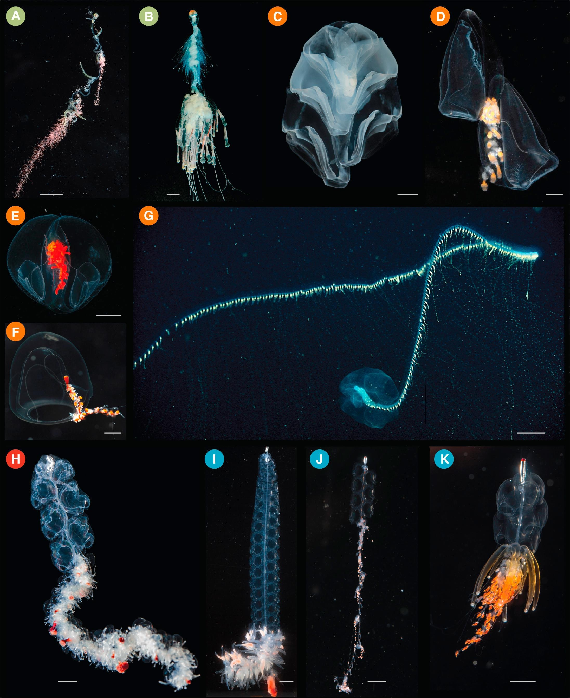
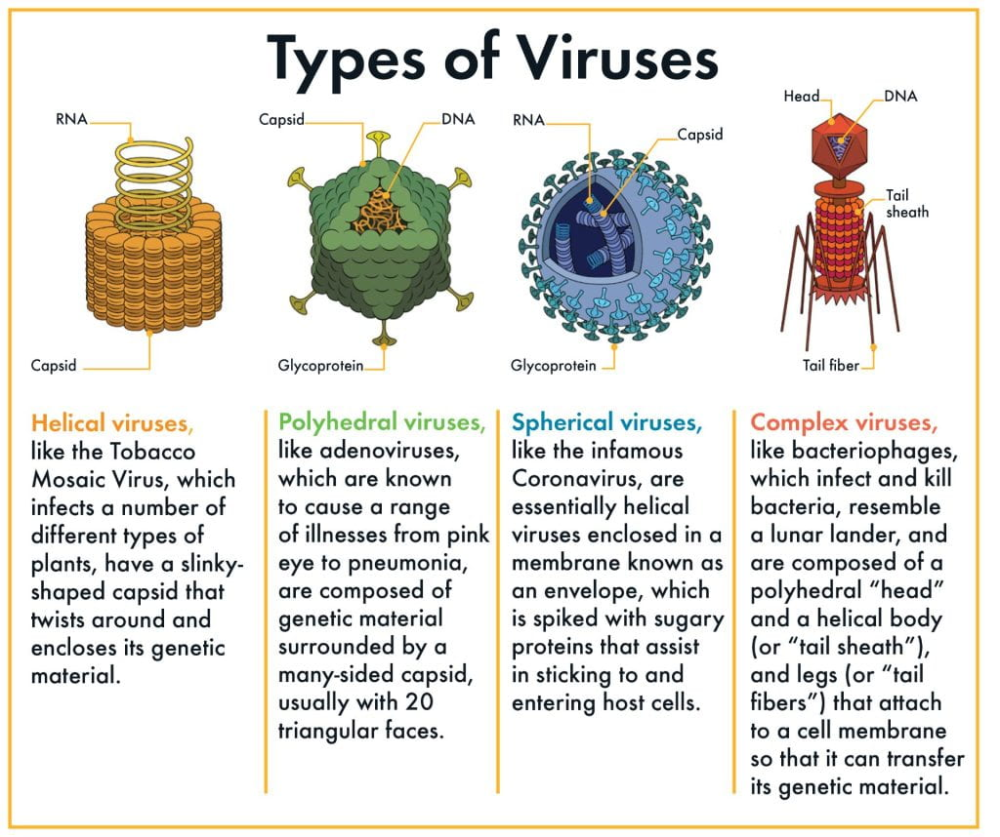
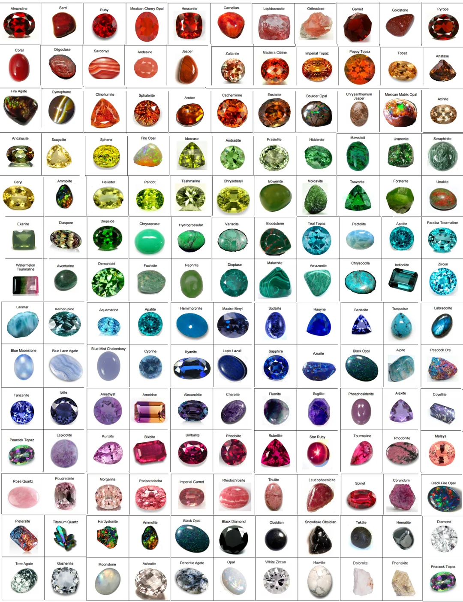

Hobbies
I love to create art, digital or traditional; additionally, I love to conjure and write up stories and weaving in themes and nuance! I love learning about animals, particularly, insects and marine life (as in: jellyfishes, siphonophores, octopi, sea worms, squids, etc.)! I love learning about diseases and their societal impact; additionally, I love pretty rocks, gemstones, and jewelry! I am quite interested in psychology and mental health; also interested in law, history, society, and politics! I like playing video games, arts & crafts, I like sleepovers and camping from time to time. I like to nap and read stories to people. I love listening to music and vibing with it.
  